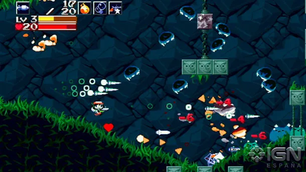

Stardew Valley

En Stardew Valley, el jugador toma el rol de un personaje que se
encuentra atrapado en un trabajo de oficina, para escapar de él se
va a vivir a la granja de su abuelo, la cual se encuentra en ruinas.
La granja se encuentra ubicada en Pueblo Pelícano. El jugador
controla las acciones del personaje, utilizando energía al realizar
acciones como cultivar, regar los cultivos o minar, entre muchos
otros. El tiempo y energía utilizada para realizar las acciones
dependen del nivel que el personaje cuente en dichas actividades,
las cuales aumentan con el tiempo al repetir la tarea una y otra
vez.
Cave story

Considerado ya un clásico, este juego de plataformas mezcla la
jugabilidad de clásicos tan dispares como Mario y Castlevania con
gráficos en 16 bits. Desarrollado por una sola persona bajo licencia
freeware, Cave story ha sido todo un éxito mundial que recoge lo
mejor de la época a la que homenajea. Visualmente es tan básico como
efectivo, sin pretenciosidad ni florituras, un trabajo basado en la
expresividad.
Hyper Light Drifter
Este juego de acción cuenta con varios elementos equilibrados y
dispuestos de manera muy inteligente para invitarte a que lo
explores. Por un lado su jugabilidad desafiante, imprescindible y
rompedora en estos tiempos, pero además viene acompañado de un
apartado visual tan peculiar como absorbente. Uno de los mejores
trabajos de pixel art de los últimos años, no sólo por su perfección
de la técnica sino por suponer todo un derroche de imaginación, tan
dotado de personalidad que lo hace fácilmente reconocible tan sólo
con ver un fotograma.